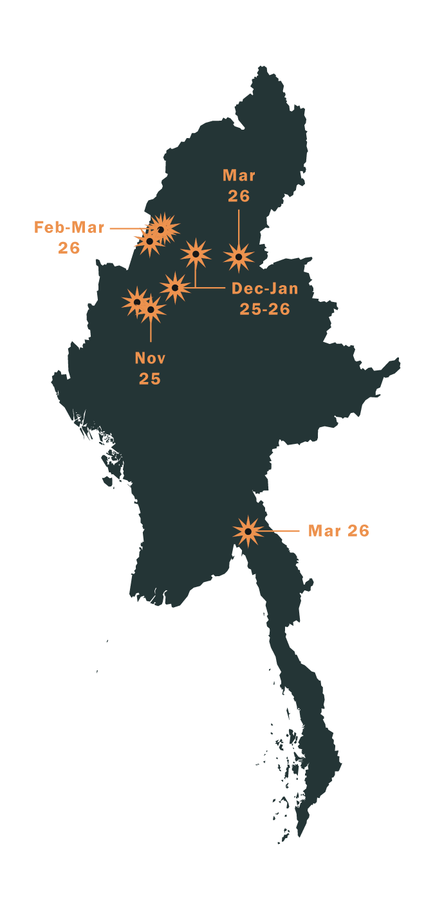
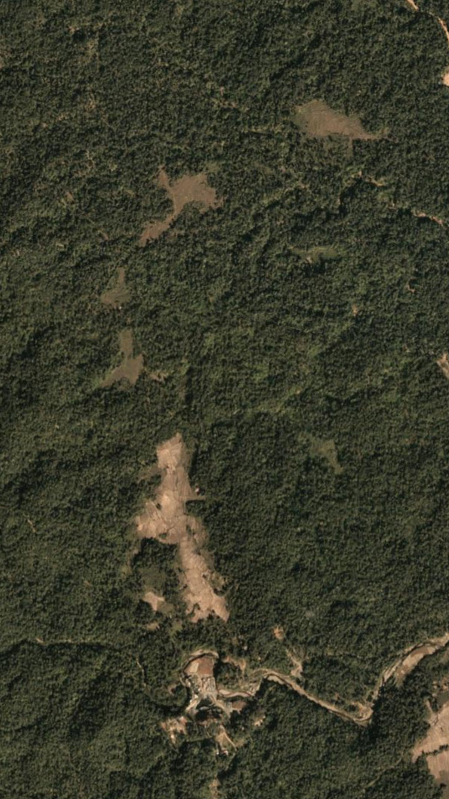
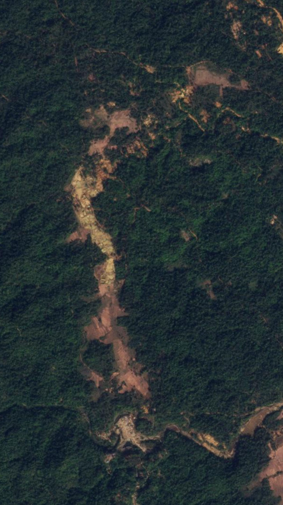
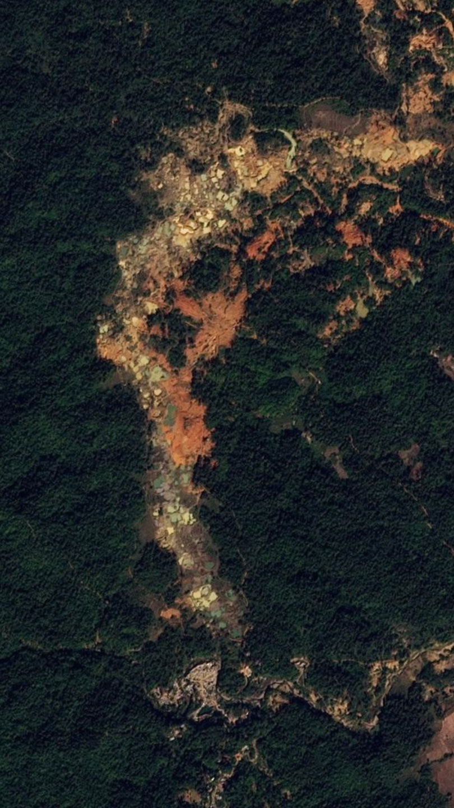
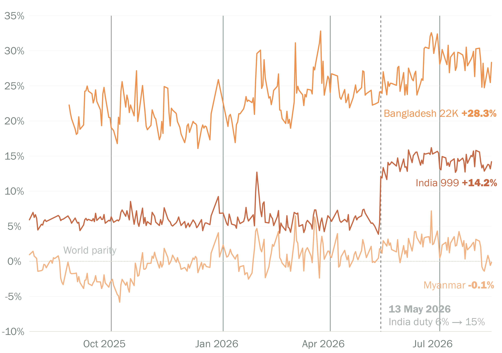

Much of the mining takes place in creeks and rivers, or along their banks and in nearby fields. Homalin, in northern Sagaing Region, was already a hotspot before the coup, with the Shanni Nationalities Army, a pro-regime militia, informally taxing the miners.
How Gold Funds the Struggle Against Military Rule
Gold mining has long been a lucrative source of income in Myanmar for both the government and non-state armed groups. But since the 2021 coup, worsening conflict, economic collapse and soaring global prices have triggered a new gold rush across parts of central and northern Myanmar. Official figures put Myanmar’s gold production at just 500 kilograms, but informal production is likely to be at least ten times higher – valuing the industry at close to $1 billion a year. The sector also provides jobs for hundreds of thousands of people.
The alluvial mining operations here employ tens of thousands of people, mostly migrants from elsewhere in Myanmar. But the mining has also reshaped the landscape – destroying farmland, carving up riverbanks and in some places even changing the course of waterways.
Since the military takeover, miners have pushed south from Homalin along the Chindwin River into areas where the regime has lost control. In some resistance-dominated areas, local administrators and armed groups aligned with the National Unity Government – the parallel administration created by lawmakers ousted by the 2021 coup – have allowed gold dredging boats to operate, from which they collect annual licence fees and monthly taxes.
The miners use boats to suck soil from naturally forming sandbanks, and then run it through sluices. They then separate the gold using dangerous chemicals, often including mercury, and dump the waste back into the river.
The dredging operations have triggered protests from nearby communities, concerned about the impact on their livelihoods. The sandbanks that emerge in the Chindwin River during the dry season are prized for their fertile soil, but once miners churn them up, they can no longer be cultivated.
Some unlucky rafts will be hit, equipment will be lost and workers will die. But it doesn’t take long for the rafts to restart operations – they take the hits and go back to work”, said one resistance source. “And for the military commanders, it’s all just for show.”
Resistance groups in the area say taxing gold mines is one of the few ways they can buy weapons and ammunition. But some local leaders are also accused of profiting personally from the industry, including by running dredging boats themselves. Residents also fear the mining will draw military attacks from a regime determined to cut off its opponents’ revenues.

Local regime officials have also benefited, collecting bribes and informal taxes from miners in exchange for not attacking their operations. But after battlefield losses and a shake-up in Sagaing Region’s military command in November 2025, pro-regime social media accounts began calling for airstrikes on mining sites in resistance areas to prevent these armed groups from getting funds. Over the past nine months, local media has reported dozens of airstrikes against gold mining sites spanning at least eight townships.
Satellite imagery shows that the boom extends well beyond the Chindwin basin. Along the Meza River and its tributaries in northern Sagaing, Crisis Group analysis of satellite imagery found a three-fold expansion of alluvial mining since the coup. Around Thaphanseik Dam in Kyunhla Township, the mining footprint more than doubled between 2020 and 2025, covering more than 28,000 hectares. Much of this mining has spread from riverbanks into forests and paddy fields – even right up to the edge of houses. Farmers say armed groups pressure them to sell land to miners, leaving communities with polluted water and damaged fields.
Satellite imagery shows that the boom extends well beyond the Chindwin basin, to areas such as the Meza River and its tributaries in northern Sagaing.
Satellite imagery shows that the boom extends well beyond the Chindwin basin, to areas such as the Meza River and its tributaries in northern Sagaing.
Crisis Group analysis of satellite imagery found alluvial mining had expanded from around 7,350 hectares to 19,210 hectares – an almost three-fold expansion since the coup.
To the west, the area around Myanmar’s largest irrigation dam, Thaphanseik, is another hotspot. Here, Crisis Group found that the mining footprint had more than doubled between 2020 and 2025.
Alluvial mining now covers almost 29,000 hectares around Thaphan, with new sites concentrated in resistance-held areas north of the dam.
Much of this mining has spread from riverbanks into forests and paddy fields – even right up to the edge of houses. Farmers say armed groups pressure them to sell land to miners, leaving communities with polluted water, damaged fields and little recourse.

2018
2023
2025Control of areas rich in underground gold seams has also become a military objective for both the regime and its opponents. In Banmauk Township, resistance forces seized the town and nearby mining areas in September 2025 before the military and Shanni Nationalities Army counterattacked. The resistance later abandoned the town, but still oversees many mines in the surrounding area.
Gold from mining operations is sent by boat, plane or road to refineries in Mandalay, Myanmar’s second-largest city. Local demand is high because of the instability of the kyat, the national currency, capital controls and demand for safe-haven assets. But because gold fetches a higher price in neighbouring India and Bangladesh, traders also smuggle it across Myanmar’s porous borders.
Price Advantages for Cross-border Gold trade
Premiums in per cent (%), by country

Gold mining provides jobs in a devastated economy and revenues for armed groups fighting the regime. But it also destroys farmland, pollutes waterways, enriches local powerbrokers and makes nearby communities targets in the war. “I’m not opposed to all mining, particularly if the revenues really support the revolution”, said one Banmauk resident. “But the authorities need to manage the impacts on the environment and communities. Now there are no rules – they mine anywhere”.